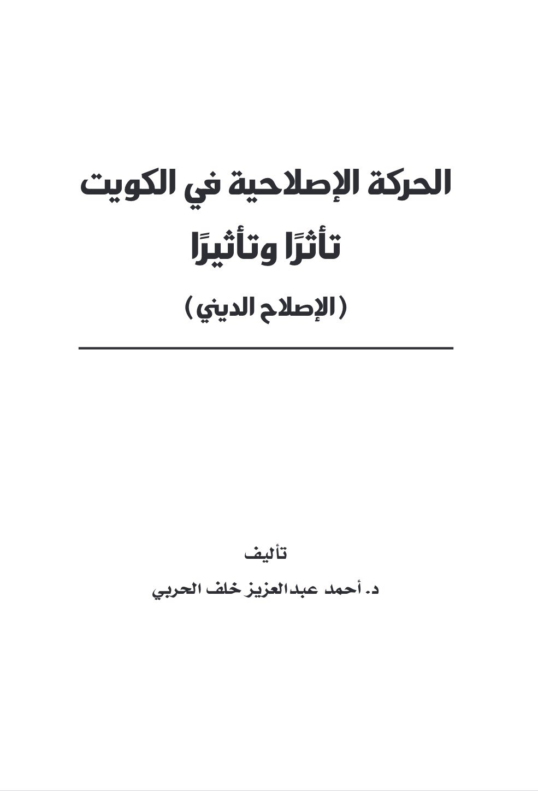
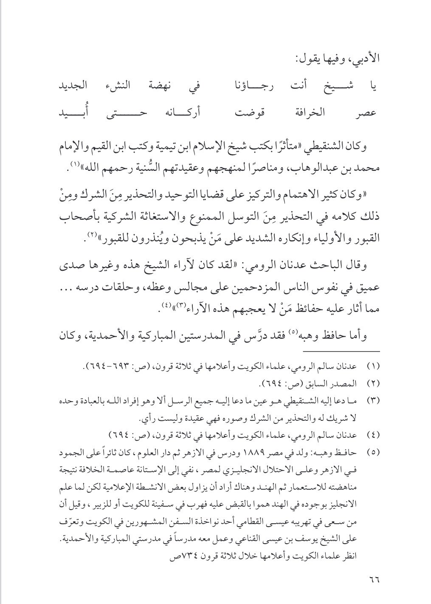

Book on Kuwait’s reform movement · Book pages, Dr Ahmed Abdulaziz Khalaf Al-Harbi, Al-Haraka Al-Islahiya fil-Kuwait: Ta'aththuran wa Ta'thiran (Al-Islah Al-Dini)
Eissa Al-Qatami and the escape of Hafiz Wahba; preaching at Masjid Al-Qatami
What it is
Note 5 on page 66, on the Egyptian reformer Hafiz Wahba, who later taught at Al-Mubarakiya and Al-Ahmadiya schools: when the British in India meant to arrest him he fled by ship to Kuwait or Al-Zubair, «and it is said that among those who worked to smuggle him was Eissa Al-Qatami, one of the well known ship nakhudas of Kuwait»; the book cites Adnan Al-Roumi, Ulama Al-Kuwait wa A'lamuha, page 734. Page 226 records that Sheikh Mohammed bin Mani' preached in Kuwait «at Masjid Al-Qatami in Sharq, near the house of Al Shamlan», and that he stayed with them as a guest.
Why it matters
A reported role for Eissa in a famous episode of Kuwait’s reform history, and another record of Masjid Al-Qatami in Sharq.
Page copies


Notes
Only the first pages are shown here. Family members who sign in can see all 3 pages.
Others named
Sources
Dr Ahmed Abdulaziz Khalaf Al-Harbi, Al-Haraka Al-Islahiya fil-Kuwait: Ta'aththuran wa Ta'thiran, pages 66 (note 5) and 226
How this text was made: The book says «it is said» (qeel): a report, not a certainty. The year and publisher are not on the pages sent.
Open in the interactive site